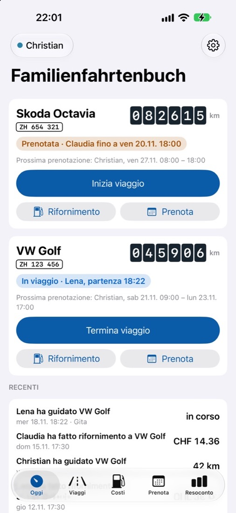
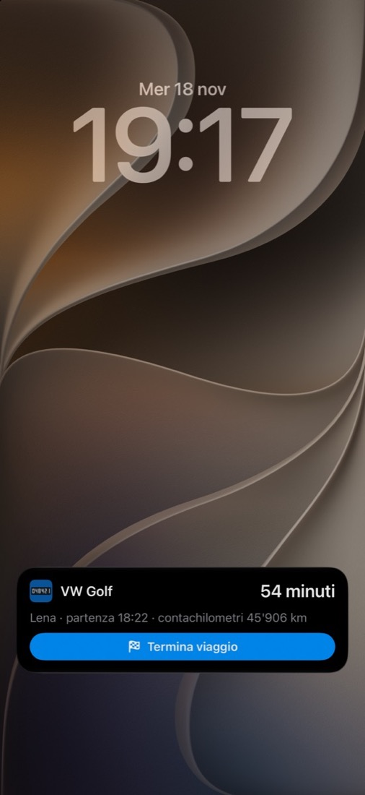
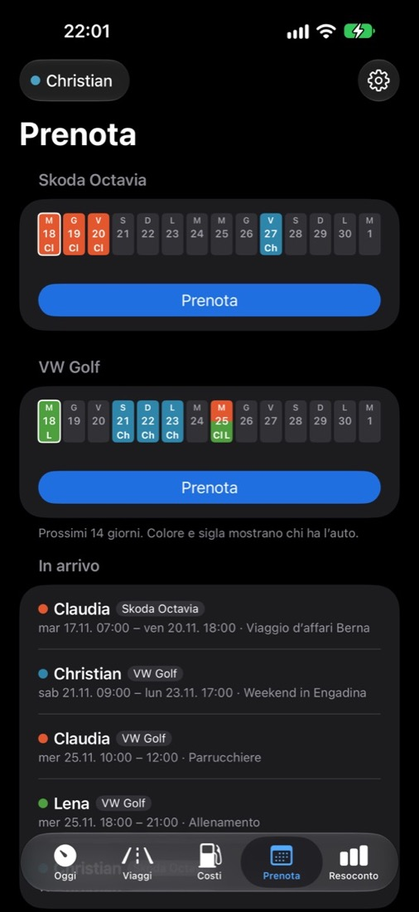
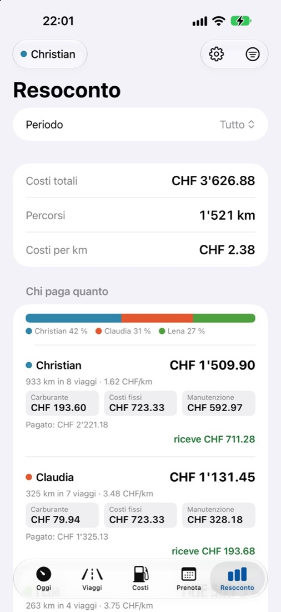
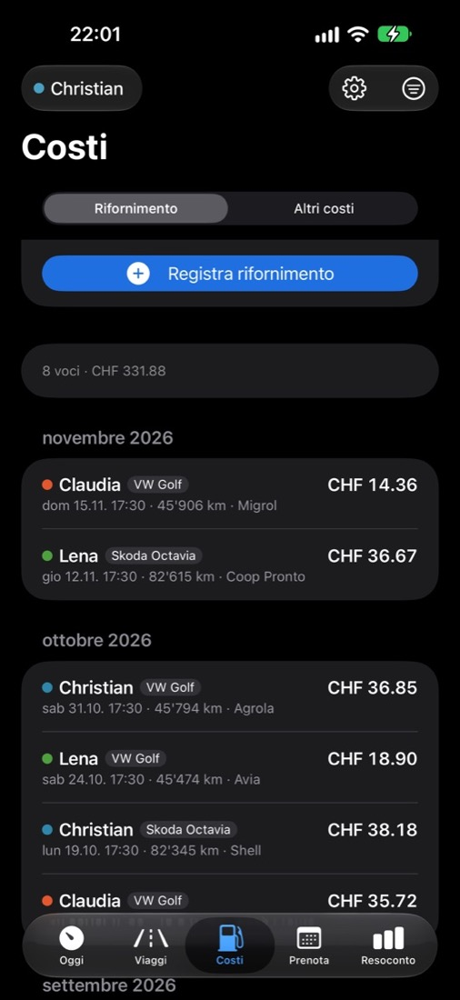
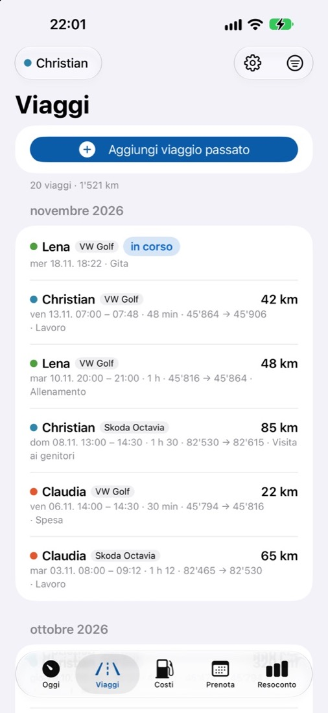
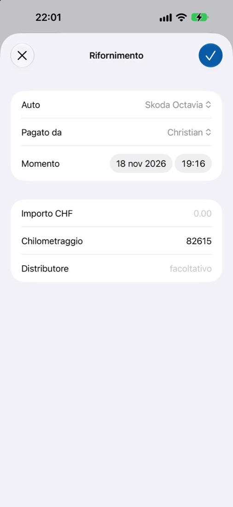

Viaggi, rifornimenti o ricariche, costi e prenotazioni per le auto della famiglia, in un unico posto: benzina, diesel, elettriche o ibride plug-in. L’app ripartisce i costi secondo chiavi impostabili e mostra chi deve quanto a chi. Ogni membro della famiglia registra sul proprio iPhone, la sincronizzazione avviene tramite iCloud.







Immagini con dati di esempio.
Cosa fa l’app
- Viaggi – Iniziare e terminare un viaggio con il chilometraggio, oppure aggiungerlo più tardi. Durante il viaggio la schermata di blocco mostra la durata con il pulsante «Termina viaggio».
- Rifornimento e ricarica – Registrare importo e chilometraggio, anche per auto elettriche e ibride plug-in.
- Altri costi – Assicurazione, tagliando, riparazioni e tutto ciò che si aggiunge.
- Prenotare – Prenotare l’auto per un periodo e vedere a colpo d’occhio l’occupazione dei prossimi 14 giorni. Arriva una notifica quando qualcuno prenota, sposta o elimina.
- Conteggio equo – Ripartire i costi per auto e tipo: in base ai chilometri, in parti uguali o con quote fisse. L’app mostra chi deve quanto a chi e registra il conguaglio. Esportazione come tabella (CSV).
- Per tutta la famiglia – Condiviso tramite iCloud, ognuno con il proprio iPhone, con il diritto di modificare o solo di visualizzare. L’app tiene conto correttamente di chi entra o esce e delle auto vendute.
- Siri e CarPlay – «Inizia un viaggio con Fahrtenbuch» funziona anche in auto e con l’iPhone bloccato.
- Quattro lingue – Italiano, tedesco, francese e romancio.
Volutamente semplice
Familienfahrtenbuch è fatto per le famiglie che condividono le loro auto, non per aziende o flotte. Per questo non contiene ogni funzione immaginabile, ma solo ciò che serve davvero: chi ha guidato quando, cosa è stato pagato, chi ha prenotato l’auto e come alla fine i costi vengono ripartiti in modo equo.
Meno, ma fatto bene. Senza account, senza pubblicità, senza server proprio. I dati restano in famiglia.
Domande, errori o desideri?
support@familienfahrtenbuch.chDomande frequenti
L’app è tradotta?
Sì, dalla versione 1.4 l’app è disponibile in italiano, francese e romancio. Il francese e l’italiano sono stati tradotti con l’intelligenza artificiale (IA), il romancio con ALAS, il traduttore della Lia Rumantscha; vi ringraziamo se ci segnalate gli errori. L’app segue la lingua dell’iPhone. Un’altra lingua solo per questa app si sceglie nell’app sotto Impostazioni → «Lingua»; poi chiudere del tutto l’app e riaprirla.
Come invito qualcuno nella famiglia?
Nell’app, sotto Impostazioni → «Invita la famiglia …», inviare un link, ad esempio con Messaggi.
La persona invitata installa l’app, la apre una volta e poi tocca il link. Se dopo averlo toccato non succede nulla, toccare semplicemente di nuovo il link.
Cosa serve?
Un iPhone con iOS 17 o più recente. Per condividere con la famiglia, tutti devono aver effettuato l’accesso a iCloud con il proprio ID Apple. I dati della famiglia si trovano nell’iCloud della persona che ha invitato e contano nel suo spazio iCloud (di solito pochissimo).
Le modifiche non arrivano sull’altro iPhone
La sincronizzazione tramite iCloud può richiedere alcuni minuti. In background funziona solo se l’aggiornamento in background è attivo per l’app e la modalità di risparmio energetico è disattivata. Altrimenti le modifiche arrivano solo quando si apre l’app. Controllare:
- Impostazioni iOS → Generali → Aggiorna app in background: attivo, anche per Familienfahrtenbuch.
- Risparmio energetico disattivato. Non chiudere l’app nel selettore delle app.
- Entrambi gli iPhone sono connessi a Internet e a iCloud.
- Nell’app, sotto Impostazioni, figurano «Ultimo caricamento» e «Ultimo invio». Se appare un messaggio «Sincronizzazione iCloud: …», inviatecelo per favore.
- Chiudere del tutto l’app una volta e riaprirla.
Cosa mostra la visualizzazione in tempo reale durante un viaggio?
Finché il tuo viaggio è in corso, la schermata di blocco e la Dynamic Island mostrano l’auto, la durata e il pulsante «Termina viaggio». Il pulsante apre direttamente il modulo per il chilometraggio. Se un viaggio è in corso da 12 ore, l’app ricorda di terminarlo.
La prima volta iOS chiede se l’app può mostrare le attività in tempo reale. Si può attivare e disattivare nelle impostazioni iOS sotto Familienfahrtenbuch → Attività in tempo reale. iOS non mostra un’attività in tempo reale per più di 8 ore.
Come funziona l’app con Siri?
Di’ ad esempio:
- «Inizia un viaggio con Fahrtenbuch»
- «Inizia un viaggio con VW Golf in Fahrtenbuch» (con il nome della tua auto)
- «Termina il viaggio con Fahrtenbuch»
- «Registra un rifornimento con Fahrtenbuch» o «Registra una ricarica con Fahrtenbuch»
Siri chiede ciò che manca: l’auto se ce ne sono più di una, alla fine il chilometraggio, per rifornimento o ricarica l’importo e il chilometraggio. Viene registrato per la persona scelta come «io» in alto a sinistra nell’app. Iniziare e terminare un viaggio funziona anche con l’iPhone bloccato e in auto con CarPlay, rifornimento e ricarica solo dopo lo sblocco.
Gli stessi comandi si trovano nell’app Comandi e si possono assegnare al tasto Azione. Nell’app, sotto Impostazioni → «Siri e Comandi», sono elencate tutte le frasi.
Non ricevo notifiche per le prenotazioni
Ogni iPhone crea la notifica da sé non appena la sincronizzazione ha portato la modifica. L’interruttore «Notifiche per le prenotazioni» nelle impostazioni vale quindi solo per il proprio iPhone. Inoltre l’app deve poter inviare notifiche nelle impostazioni iOS.
Importante: senza aggiornamento in background o con il risparmio energetico, la notifica arriva solo quando si apre l’app. Anche altrimenti è iOS a decidere quando risvegliare l’app in background; una notifica può quindi arrivare qualche minuto più tardi.
Qualcuno non guida più con noi, un’auto è stata venduta
Per le persone, nelle impostazioni «Far uscire …», per le auto «Segna come venduta …». Entrambe restano con le loro voci nel conteggio, così il conguaglio torna, ma non appaiono più negli elenchi di scelta.
Come lascio una famiglia o elimino tutti i dati?
Lasciare una famiglia: Impostazioni → «Mostra partecipanti». Eliminare tutti i dati della famiglia: Impostazioni → «Ripristina». Questo elimina i dati anche presso tutte le persone invitate.
Funziona anche con un’auto elettrica o un’ibrida plug-in?
Sì. Nelle impostazioni dell’auto scegliere la motorizzazione «Elettrica». Allora si «ricarica» invece di «fare rifornimento». L’elettricità viene ripartita nel conteggio come il carburante, in base ai chilometri percorsi. Con Siri: «Registra una ricarica con Fahrtenbuch».
Per un’ibrida plug-in scegliere «Ibrida plug-in» (dalla versione 1.4). Il pulsante si chiama allora «Pieno/Ricarica» e nel modulo scegli se hai fatto rifornimento o ricaricato. Siri lo chiede.
Quanto costa l’app?
Niente. Nessuna pubblicità, nessun abbonamento.
Cosa succede ai miei dati?
L’app non raccoglie dati. Ciò che inserite si trova sul vostro iPhone e in iCloud, visibile solo alla vostra famiglia. Non abbiamo accesso. Dettagli nella dichiarazione sulla protezione dei dati.